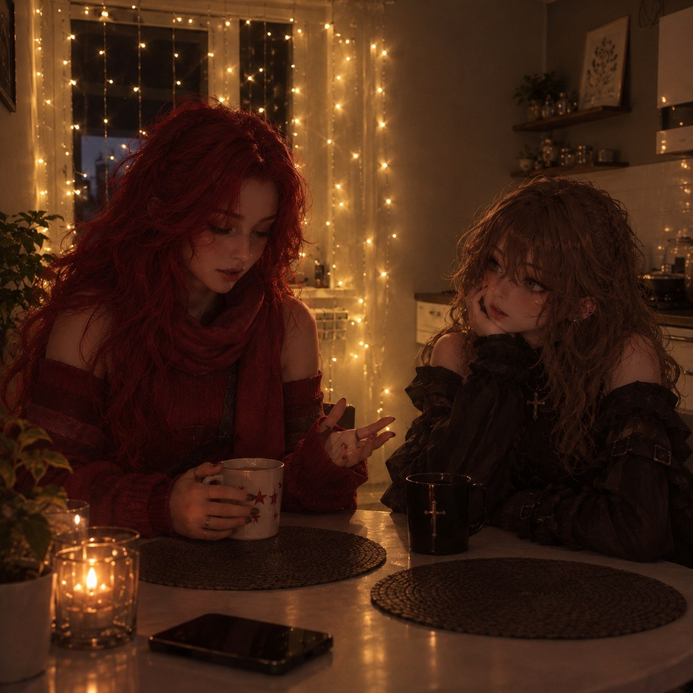

Глава 1. Настоящее.
К обеду голова гудела, глаза слезились от монитора, а в желудке было пусто, как в карманах у студента перед стипендией. Деста потянулась, хрустнула затекшей шеей и решила, что еще один абзац кода ее просто добьет.
Рабочий день у Десты начался еще в семь утра, когда за окном только-только рассеивался туман, а соседский перфоратор уже вовсю пробовал стены на прочность. Она успела поругаться с будильником, выпить две чашки кофе и дважды переписать один и тот же кусок кода, который упорно отказывался работать так, как было задумано.
На своем перерыве Деста решила перекусить. Зайдя в магазин неподалеку, она купила булочку с ветчиной и латте. Оплатила и пошла на свое рабочее место.
Выходя, она придержала дверь для какого-то мужчины с пакетами и получила в ответ рассеянное «спасибо». Деста прижала к себе теплый бумажный пакет с булочкой и пошла знакомой дорогой, по привычке считая трещины на асфальте. До дома было минут десять неспешным шагом, и торопиться она не собиралась.
На улице, как в начале многих фильмов и сериалов, светило солнце и было слышно пение птиц. Придя домой, девушка уселась поудобнее на диванчике, включила музыку и продолжила работать.
Булочка оказалась на удивление вкусной: мягкая, еще теплая, с щедрым куском ветчины и тонким слоем сыра. Латте, правда, успел немного остыть, но Деста привыкла пить кофе в любом состоянии, хоть ледяным, хоть кипящим. Крошки сыпались на клавиатуру, и она то и дело смахивала их пальцем, не отрываясь от экрана.
На фоне играли разные песни: от Цоя до Шамана. Вникая в работу, Деста не заметила, как ей написал ее начальник. Она увидела это лишь спустя полтора часа, но вместо ответного сообщения решила позвонить. Спустя несколько гудков на другом конце трубки раздался голос:
-Деста, не занята?
-Ну на данный момент я абсолютно свободна. А что случилось?
- Нам нужно поговорить у меня в кабинете, жду тебя через час у себя.
Закончив разговор, девушка легла на диван.
Потолок в комнате был белым и скучным, но именно на него Деста любила смотреть, когда мозг требовал перезагрузки. Начальник никогда не звонил просто так, а уж тем более не просил приехать лично. Обычно все вопросы решались парой сообщений в рабочем чате, и от этого внезапное «поговорить в кабинете» звучало как приговор.
Опять переться хуй пойми куда. Я ж специально устроилась туда, чтобы удаленно могла работать. Смысл ездить туда-сюда…
Она еще немного поворчала себе под нос, потом все же поднялась, посмотрела на себя в зеркало и тяжело вздохнула. Растрепанный пучок, пятно от латте на футболке и круги под глазами. Переодеться и привести себя в порядок заняло минут двадцать, остальное время ушло на дорогу.
Дорога до офиса и правда выматывала: сначала маршрутка, где пахло чужими духами и пирожками, потом пересадка, потом еще десять минут пешком под полящим солнцем. К тому моменту, когда Деста дошла до нужного здания, ее настроение окончательно упало ниже плинтуса.
Когда девушка пришла в кабинет к начальству, на диванчике рядом с аквариумом сидел высокий мужчина со стаканчиком кофе в руках. Деста подошла к начальнику и положила отчет на его стол.
Кабинет у начальника был просторный, с огромным окном во всю стену, из которого открывался вид на соседние крыши. Аквариум с яркими рыбками булькал в углу, создавая ощущение, что ты не на работе, а в приемной у стоматолога. Мужчина на диване на Десту даже не взглянул: он лениво разглядывал рыбок, будто они были главной достопримечательностью города.
-Молодец, справилась быстро. Но я по другой теме тебя вызвал…
Мужчина не успел договорить, как его прерывает парень, встав с дивана
- Мне нужна твоя помощь. Я знаю, что ты любишь работать из дома и тогда, когда тебе захочется. Но тебе надо будет приезжать ко мне…
Говорил он спокойно, но смотрел при этом так внимательно, будто изучал ее, как редкий экспонат в музее. Деста невольно поежилась и скрестила руки на груди.
-А кто сказал, что я согласна на тебя работать? Мне и тут платят хорошо, я работаю в комфортных условиях для себя и в удобное время.
В разговор вмешался начальник Десты
-Деста, это предложение выгодное. Для тебя особенно, лучше согласись и я тебе плюсом еще аванс дам.
Парень положил стакан на стол и подошел ближе к девушке
-Я предлагаю тебе зарплату в 3… нет, в 5 раз больше, чем ты получаешь тут. При этом офис находится рядом с твоим домом, тебе не придется ездить по часу. Я предоставлю тебе кабинет, в котором тебе будет так комфортно, что ты не захочешь возвращаться домой.
Девушка замолчала, обдумывая предложение.
В голове быстро замелькали цифры. Пятикратная зарплата — это не просто приятная прибавка, это совсем другая жизнь: можно наконец-то сменить старый ноутбук, съездить к морю, а не сидеть все лето в душной квартире, и даже, чем черт не шутит, начать копить на собственное жилье. С другой стороны, за такие деньги просто так не платят, и Деста это прекрасно понимала.
-Хорошо, но с условием. Я буду приходить и работать, когда мне удобно, независимо от времени суток
В кабинете стало на несколько минут тихо.
Только аквариум продолжал размеренно булькать, а рыбки лениво шевелили плавниками, не подозревая о том, что решается чья-то судьба. Начальник нервно постукивал пальцами по столу, а незнакомец с невозмутимым лицом допивал свой кофе.
-Отлично, я все ровно там чуть ли не живу. Так что приходи когда угодно
-Сколько вы готовы мне платить?
- Я же сказал, в 5 раз больше, чем ты получаешь здесь.
-У вас есть такие деньги на одного человека? Чет слабо вериться вашим словам. Было бы так, вам бы не пришлось меня о помощи просить. Вас бы устроил вариант поопытнее
-Лично тебе я могу платить из своего бюджета, все ровно немного проработаем надеюсь.
Кто не пробует, тот вина не пьет
Деста еще раз внимательно посмотрела на мужчину. Одет он был дорого, но без лишнего пафоса: темный пиджак, белая рубашка с расстегнутой верхней пуговицей, на запястье простые часы. Ни кольца, ни браслета, ни одной лишней детали. Такие люди обычно знают, чего хотят, и привыкли получать это без лишних разговоров.
-Хорошо, показывайте, рассказывайте, что вам нужно
-Так бы и сразу. Я не представился, меня зовут Норд, я - местный детектив. Пошли я тебя подвезу до офиса и по дороге расскажу подробности твоей работы.
Усевшись в машину, парень предложил девушке заехать по пути в какую-нибудь кафешку, на что девушка отказалась.
Машина у него была чистая до неприличия: ни фантиков, ни пустых стаканчиков, ни забытых зарядок. Только легкий запах кожи и чего-то древесного. Деста покосилась на приборную панель, потом на водителя и решила, что для человека, который «чуть ли не живет» в офисе, он слишком аккуратен.
-Так вот, по поводу дела. Я уже сказал, кем я работаю: я сейчас веду расследование про убийство девушек. Все бы ничего, маньяк маньяком, больше-меньше. Но как бы не было банально, случаи убийства участились. Я понял вроде как по какому принципу выбирается жертва, время, должность, и как происходит убийство. Но мне не хватает умной, элегантной дамы, которая готова помочь такому прекрасному мужчине в самом рассвете сил.
Элегантную? Это он про меня что ли? Ну не буду его переубеждать
Норд бросил на нее быстрый взгляд, будто услышал мысли, и едва заметно улыбнулся уголком губ. Деста тут же отвернулась к окну, делая вид, что рассматривает проплывающие мимо дома.
-Так от меня что вы хотите?
Машина останавливается возле миленького, миленького домика.
-Это ты узнаешь в кабинете.
Парень вылез из машины и открыл девушке дверь.
Домик утопал в зелени: вдоль дорожки росли аккуратные кусты сирени, на крыльце стояли горшки с цветами, а на окнах висели легкие занавески в мелкий цветочек. Никакой таблички, никаких камер, никакой охраны. Со стороны это место скорее напоминало дачу доброй бабушки, чем логово детектива, расследующего убийства.
Вот это сервис, надеюсь у них там есть горячий шоколад
Внутри домик выглядел чуть больше, чем казался. Светлые стены, мягкие кресла и диванчики вдоль стены с игрушками делали помещение не серьезным, детективным агентством, а миленькой комнатой маленькой девочки, которая мечтает о принце на белом коне.
Идя по коридору, девушка учуяла какой-то слабый, но сладкий аромат, исходящий чуть ли не от каждой двери. Парень открыл одну из дверей, выделявшуюся пушистой обивкой.
Войдя в кабинет, первым делом девушка заметила кровать, стоявшую почти рядом с окном. На полу лежал пушистый, мягкий, круглый коврик. Напротив кровати стоял стол с тремя большими мониторами, рядом стояло кресло. Почти рядом с компьютером стоял столик с кофе машинкой.
Ну нихуя себе. Об таком я могла только мечтать. Ну у меня, конечно, комната примерно такая же, но это офисный кабинет, вроде как.
Деста прошлась по комнате, провела ладонью по мягкому покрывалу, потрогала настольную лампу, выглянула в окно, откуда открывался вид на небольшой задний дворик с качелями. Все было слишком идеально, слишком уютно, и именно это настораживало больше всего. Люди с нормальными намерениями обычно не вкладывают столько сил в красоту рабочего места для наемного программиста.
-Это твой кабинет
-Кабинет? На вид как однокомнатная квартира
-Я старался. А теперь опять иди за мной.
Идти пришлось не далеко, буквально через 3 двери оказался кабинет детектива.
Кабинет выглядел более строго, но в нем была почти такая же мебель, как и у Девушки.
На стенах висели карты города с воткнутыми булавками, а на пробковой доске пестрели фотографии, схемы и стрелки, нарисованные красным маркером. Часть снимков была перевернута лицевой стороной вниз, и Деста подумала, что так, наверное, даже лучше. Под потолком тихо гудел кондиционер.
-Можешь садиться куда хочешь
Девушка села на кресло, оглядывая кабинет. Парень достал какие-то бумаги и вручил Десте.
-Здесь вся информация, которую я узнал, пока расследовал дело. Девушки, в возрасте 18-25лет, утром, днем и вечером, иногда ночью, но это редко, выходили на улицу. Все они проходили мимо старого магазинчика и пропадали на разных местах, и все они были под камерами. Кто их похищал, либо же куда они уходили камеры не фиксировали. Но через, примерно, 12-14 часов их находили в радиусе 3-5 метров от самого магазина. Конечности были отделены от тела и лежали рядом, образовывая целого человека.
Фу. Я пошла программистом работать, а не человеческие куклы разглядывать
Желудок неприятно скрутило. Деста положила бумаги на колени, не решаясь посмотреть на фотографии, которые торчали из папки. Она вообще никогда не любила криминальные сериалы, а теперь ей предлагали участвовать в одном из них в главной роли.
-Я хочу, чтобы ты, Деста, побыла в роли тех девушек.
-Я? Вы в край отбитый? Мы живем в реальном мире, а не в фэнтэзи, где я легко могу убежать или регенерироваться. Плюсом я еще и не подписывалась на манекен для разбора тела. До свидания!
Девушка вышла из кабинета, громко хлопнув дверью.
В коридоре было так тихо, что звук ее шагов отдавался эхом. Деста прошла мимо своего нового «кабинета», даже не взглянув на него, быстро спустилась по ступенькам и вышла на улицу, где уже начинало смеркаться, а фонари один за другим зажигались вдоль дороги.
Дурдом, я думала надо будет найти кого-то или взломать где-то что-то
Погрузившись в свои мысли, девушка дошла до своей квартиры. Усевшись на диван, она позвонила своей сестре.
Пока шли длинные гудки, Деста нервно крутила в пальцах прядь волос. Агата всегда поднимала трубку почти сразу, и эта задержка в пару секунд казалась вечностью.
-Ой, Десточка, привет. Ты как там? Как работа?
-Все нормально. Слушай ты сейчас занята?
-Для тебя я абсолютно свободна. Сейчас приеду
Через пол часа раздался звонок в дверь. За ней была Агата.
Агата влетела в квартиру как маленький ураган: с пакетом печенья в одной руке, с зонтиком в другой и с растрепанными от быстрой ходьбы волосами. Она скинула кроссовки так, что один отлетел к стене, а второй упал на бок, и крепко обняла сестру прямо с порога.
-Привет, моя хорошая. Рассказывай че случилось
Не дожидаясь ответа, сестра пошла делать чай
Через пару минут из кухни донеслось знакомое бульканье чайника и звон посуды. Агата доставала чашки, гремела ложками и параллельно напевала какую-то попсовую песенку, безбожно перевирая мотив. Деста слушала все это, сидя на диване, и чувствовала, как напряжение потихоньку отпускает.
-Меня там начальник решил на тот свет отправить
-Че? Он че охуел? Я щас его отправлю. Подробности, сестричка, подробности.
В течение часа Деста рассказала сестре как все было.
Она рассказывала подробно, не пропуская ни одной детали: и про странного начальника, и про детектива с идеальной машиной, и про домик, похожий на детскую комнату. Агата слушала, подперев щеку рукой, и в особо напряженных местах ахала и хваталась за печенье. К концу рассказа чай успел остыть, а пачка опустела наполовину.
-Емае… А я-то не знала, что, пойдя на программирование, можно помощником детектива стать
-Ага, я все рассказала. Давай говори че у тебя там на личном фронте?
Так девушки сплетничали до темноты.


Они обсуждали все подряд: новых сотрудников в кафе, где подрабатывала Агата, дурацкую форму, которую заставляли носить, соседку Али, которая в третий раз за месяц затопила нижний этаж, и, конечно же, масика. Агата рассказывала про него с таким блеском в глазах, что Деста невольно улыбалась. Время летело незаметно, и за окном давно стало совсем темно.
-Ладно, мне пора уже. А то меня там заждались, во 10 пропущенных от масика
-Ладно, пока. Если что позвоню
Деста вышла вслед за сестрой на лестничную площадку, помахала ей рукой и еще минуту прислушивалась, как затихают внизу шаги.
Деста закрыла дверь и пошла в спальню
Она переоделась в пижаму с нелепыми мишками, почистила зубы, проверила замки на двери и окнах, хотя обычно этого не делала. Телефон Деста положила рядом с подушкой экраном вниз, чтобы не светился в темноте.
Надеюсь, тактика у этого маньяка-убийцы не изменится, и он ко мне в дом не залезет
Еще долго она ворочалась с боку на бок, считала овец, потом шаги за окном, потом снова овец. За стеной тикали чужие часы, где-то далеко лаяла собака. Мысли о фотографиях из папки не уходили, и только ближе к полуночи усталость наконец взяла свое.
Девушка заснула через какое-то время.
Глава 2. Во сне
Темнота, хоть глаз выколи. Девушка вроде идет, но вроде стоит на месте. Вдруг разгорается маленькое пламя, и оно все растет и растет. Перед девушкой стоит высокая, худая женщина и играет на скрипке. На вид она не старая, но и не сказать, что молодая, лет наверно 40-50. Деста стояла, не шевелясь и смотрела на женщину.